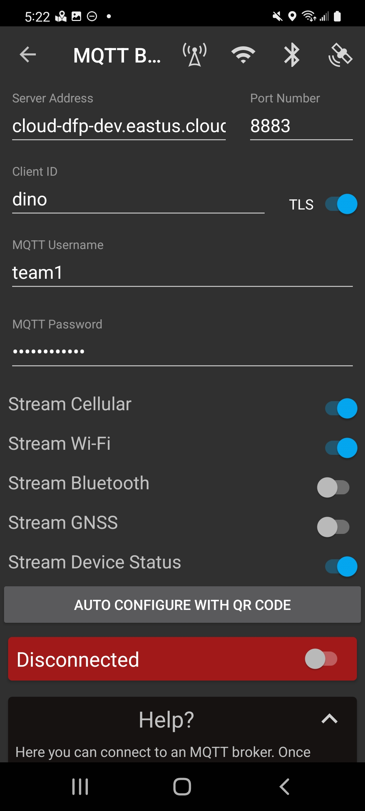
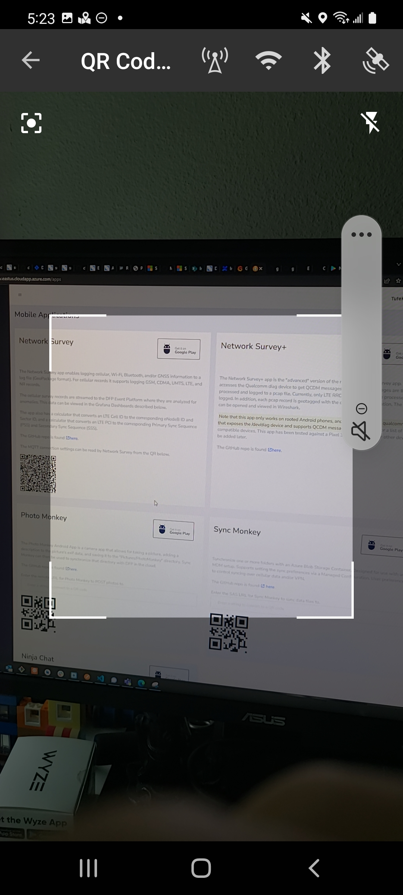
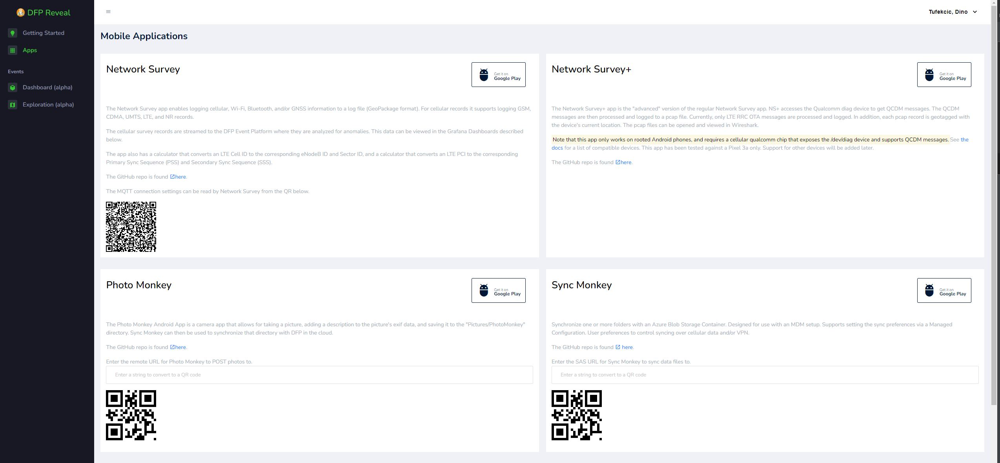
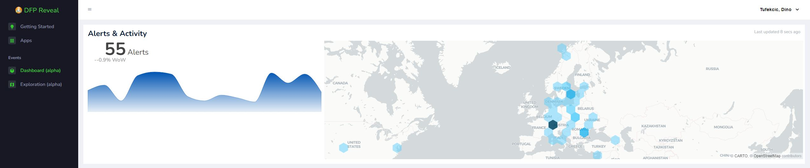
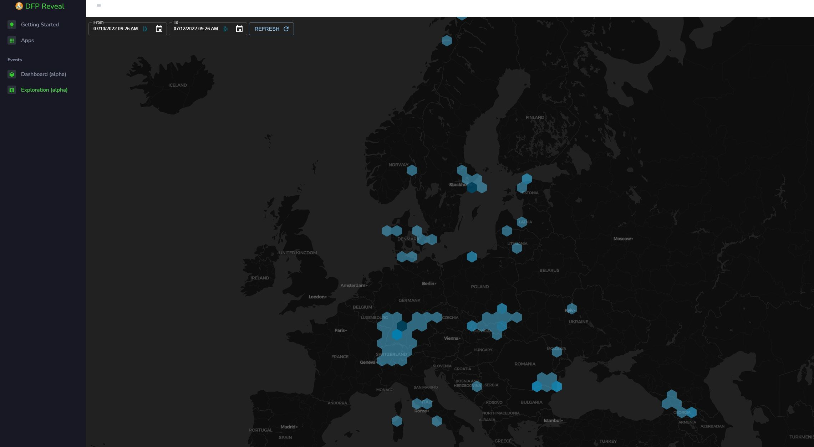

class: center, middle # Agenda 1. Network Survey QR code reader 2. QR code auto-gen on DFP Reveal apps page 3. Alert count and graph on DFP Reveal page 4. Surveys count on DFP Reveal map 5. Photo Monkey 0.2.6 location tag regardless of description 6. Photo Monkey image resizing 7. Update on the phone-state-monitor falling behind issue --- # QR Code reader in NS - Network Survey 1.7.0 released and available on the Google Play Store - New feature allows for the MQTT connection settings to be scanned from a QR code instead of manually typed into multiple phones   --- # QR Code on DFP Reveal - New microservice exposing an API for getting MQTT broker settings - QR Code for Network Survey on the Apps page in DFP Reveal  --- # Alert count on DFP Reveal - New graph on DFP Reveal showing current and historical DFP alert counts  --- # Survey count on DFP Reveal - New map on DFP Reveal showing a count of surveys on a map  --- # Photo Monkey 0.2.6 - New release available on the Google Play Store - Addresses the issue with missing location in EXIF data for photos without descriptions --- # Photo Monkey image resizing - Image resizing in Photo Monkey --- # phone-state-monitor analytic falls behind in processing messages - Issue seems to be caused by the current configuration of the MQTT eventhub - Need more TUs (Throughtput Units) to allow more parralelized processing of messages across all MQTT topics - Need more partitions on each of the topics - Making above changes requires a redeployment of existing eventhubs instance